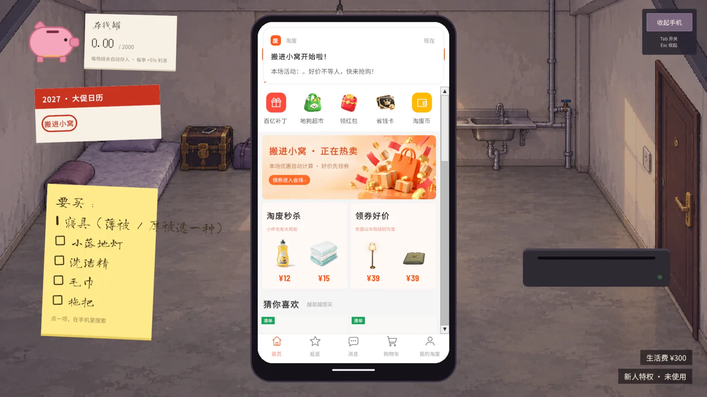
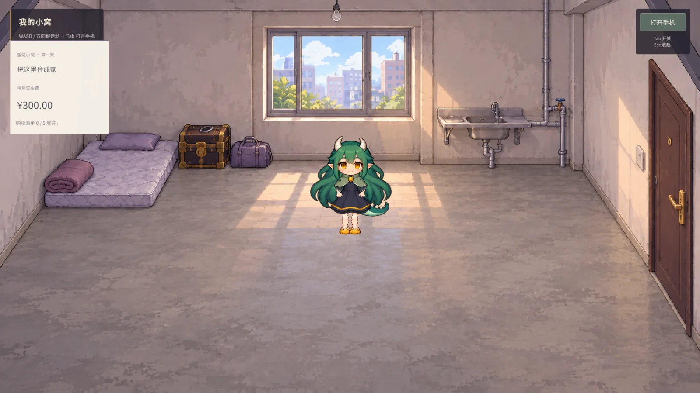

制作中多平台电商 × 生活模拟
栖金
小窝十二月起居注
一月，龙娘搬进一间毛坯小窝。
她在七个平台比价下单，等包裹，拆箱，
把东西一格一格收好，再慢慢用掉。
策划目标：让比价、等待和使用共同构成生活选择。省下的钱有回响，已有物品和零订单也有自己的路线。
核心循环
一单的旅程
- 比价下单七个平台，商品、店铺、平台优惠按顺序结算
- 包裹送达跨旬送达，等待本身也是节奏的一部分
- 收纳摆放格子储物，把东西真正放进小窝
- 用掉实际领取才能消耗；退款后重新检查任务
- 生活事件省下的钱，接回日子里
关键策划任务
把规则接回日子里
围绕经济系统、任务条件与月度节奏，处理同一个问题：玩家为什么要买，又能怎样选择。
- 拆采购目标从生活需求出发配置清单。修箱可买整套工具，也可组合替代材料；已有物品继续算数。
- 统一结算口径明确商品、店铺、平台优惠的顺序，纳入运费与拆单；现金和其他权益分别反馈。
- 串物品状态付款、送达、领取、消耗共同判定任务；退款后重检，避免未收货就能推进剧情。
- 配置月度节奏每月三旬，按采购、等待、使用安排事件。四月替代采购，六月比较方案，七月加入轻量交互。
- 定义反馈边界从全局最低价评级转向可解释的选择反馈。心愿保留自愿性，省钱也不靠强迫消费来证明。
原型画面
从手机，回到小窝
从手机下单，到东西真正进入房间。


策划判断与迭代过程见本作设计记录。
按月推进 · 每月三旬
十二个格子
1–7 月已接入，8–12 月还封着。
- 1搬进小窝毛坯房，第一次把采购、收货、摆放连起来
- 2热饮与整理已有的杯子也算数；舍不得扔的空白卡片
- 3一单不下把最好的那份藏起来，后来决定今天吃掉
- 4修好箱子替代材料、跨平台采购、可撤回的行李草案
- 5做手工，办聚会用真正领到的材料，作品不按花钱排好坏
- 6精打细算套装、拆单、等待与运费，都要走真实结账
- 7夏天6×5 便当摆放、饮品配方、可提示的饼干谜题
- 8未拆封
- 9未拆封
- 10未拆封
- 11未拆封
- 12未拆封
—— 龙娘的起居注，未完待续看设计迭代记录 ↗